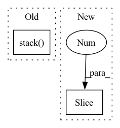

Pattern ID :16444
Before Change
for i in range(n_samples):
res.append(simple_returns[i] @ weights[i]) // (horizon, n_assets)x(n_assets)=(horizon,)
out = torch.stack( res, dim=0)
if output_type == "log":
return simple2log(out)
After Change
weights_ = weights.view(n_samples, 1, n_assets).repeat(1, horizon, 1) // (n_samples, horizon, n_assets)
if not rebalance:
weights_unscaled = (1 + simple_returns).cumprod(1)[:, :-1, :] * weights_[:, 1 :, :]
weights_[:, 1:, :] = weights_unscaled / weights_unscaled.sum(2, keepdim=True)
out = (simple_returns * weights_).sum(-1)In pattern: SUPERPATTERN
Frequency: 3
Non-data size: 2
Instances Fragment ID: 55243150
Project Name: jankrepl/deepdow
Commit Name: f641c531de3bbae674357327fc5dfa6335164d94
Time: 2020-05-01
Author: jankrepl@yahoo.com
File Name: deepdow/losses.py
M Class Name: AnonimousClass
N Class Name: AnonimousClass
M Method Name: portfolio_returns(5)
N Method Name: portfolio_returns(4)
M Parent Class:
N Parent Class:
M File Name: deepdow/losses.py
N File Name: deepdow/losses.py
M Start Line: 82
M End Line: 87
N Start Line: 48
N End Line: 92
Before Change
self.v_linear = nn.Linear(d_model, d_model, bias=bias)
def head_split(self, x): // get dimensions bs * h * -1 * d_k
return torch.stack( torch.split(x, self.h, dim=-1), dim=-3)
def forward(self, q, k, v, mask=None):
// perform linear operation and split into h heads
if not self.kq_same:After Change
self.v_linear = nn.Linear(d_model, d_model, bias=bias)
def head_split(self, x): // get dimensions bs * h * seq_len * d_k
new_x_shape = x.size()[:-1 ] + (self.h, self.d_k)
return x.view(*new_x_shape).transpose(-2, -3)
def forward(self, q, k, v, mask=None): Fragment ID: 55243151
Project Name: thuwangcy/rechorus
Commit Name: a16bc1e42f3e90e889133d7476c52ada44db573b
Time: 2020-11-18
Author: THUwangcy@gmail.com
File Name: src/utils/layers.py
M Class Name: MultiHeadAttention
N Class Name: MultiHeadAttention
M Method Name: head_split(2)
N Method Name: head_split(2)
M Parent Class: nn.Module
N Parent Class: nn.Module
M File Name: src/utils/layers.py
N File Name: src/utils/layers.py
M Start Line: 25
M End Line: 25
N Start Line: 25
N End Line: 26
Before Change
p.append(pt)
Mv.append(Mvt)
p = torch.stack( p, dim=1)
Mv = torch.stack(Mv, dim=1)
return p, Mv
After Change
self.f_layer(
torch.cat(
[
(w.unsqueeze(-1) * Mv[:, :-1 ]).sum(-2),
k
],
dim=-1 Fragment ID: 55243152
Project Name: hcnoh/knowledge-tracing-collection-pytorch
Commit Name: c42b01b83dbe54e94f4294009fbfe8bd910e3638
Time: 2021-10-06
Author: rhc0624@gmail.com
File Name: models/dkvmn.py
M Class Name: DKVMN
N Class Name: DKVMN
M Method Name: forward(3)
N Method Name: forward(3)
M Parent Class: Module
N Parent Class: Module
M File Name: models/dkvmn.py
N File Name: models/dkvmn.py
M Start Line: 40
M End Line: 66
N Start Line: 50
N End Line: 87